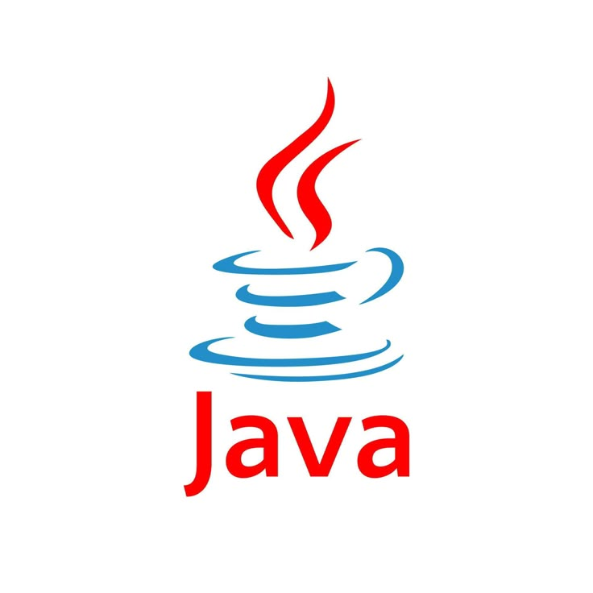
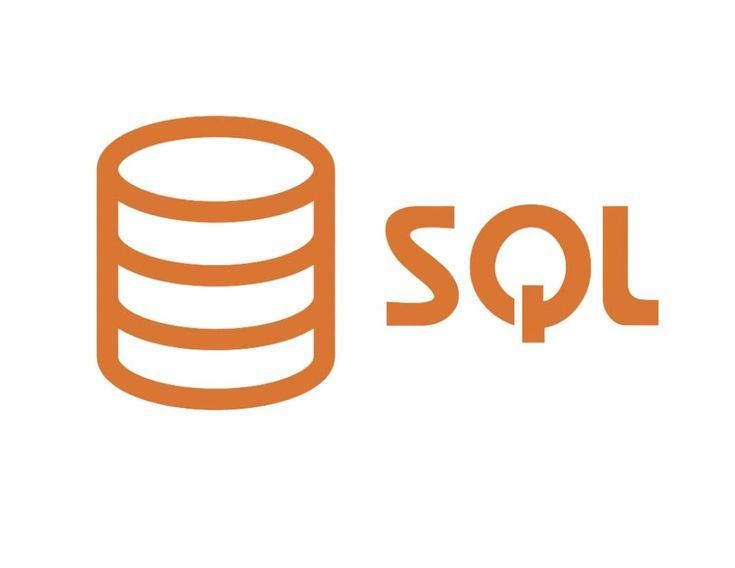
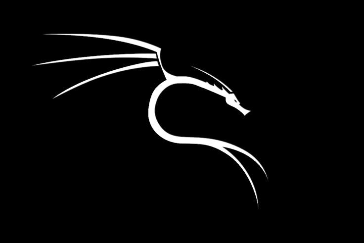
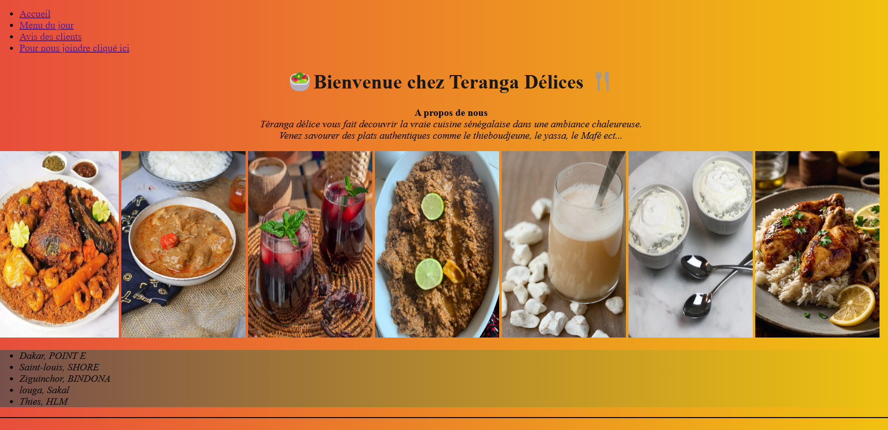
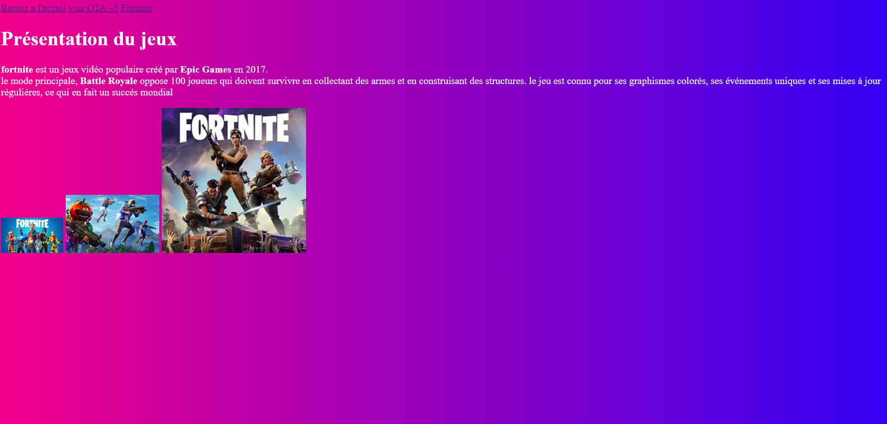
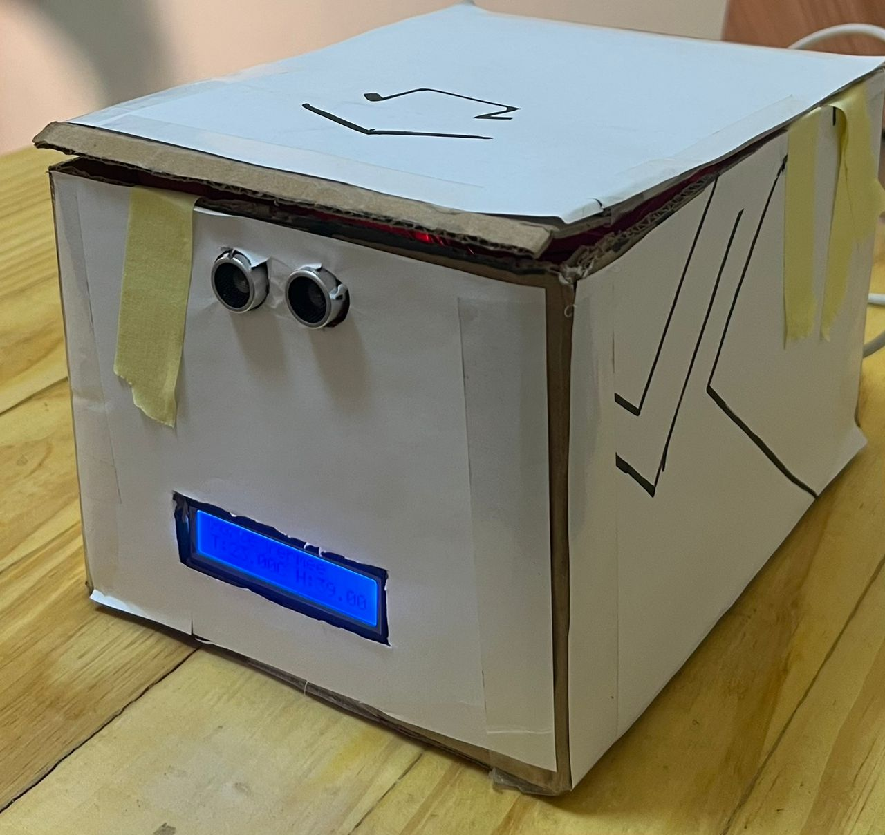

Bienvenue sur mon Portfolio
Étudiant en Génie Logiciel & Administration Reseaux (GLAR) | Passionné par l’aéronautique
Étudiant en Génie Logiciel & Administration Reseaux (GLAR) | Passionné par l’aéronautique
Je me nomme Gora Seye, passionné par le développement informatique et la cybersécurité. Je m’intéresse à la création d’applications, à la protection des systèmes et à l’analyse des failles de sécurité. Curieux et motivé, je développe également un intérêt pour l’aéronautique, où l’informatique joue un rôle essentiel. Mon objectif est de concevoir des solutions fiables, sécurisées et innovantes.
Baccalauréat Scientifiques
(2020 - 2023)
License 1 en Genie Logiciel et Administration Reseaux
(2024 - 2025)
License 2 en Genie Logiciel et Administration Reseaux
(2025 - en cours)


• savoir manipuler HTML et le CSS pour assuer le balissage et le style d'une page web
• Le langage C pour la programmation de certaines tâches informatique




Ces langagages nous permet de s'ouvrir dans le monde du développement web, comme logiel en assurant la partie:
• Frontend : pour ce qui est visible au niveau de ces derniers.
• Backend : Pour les traitements ou services qui se font derriere

Le langage SQL qui nous permet de communiquer avec les bases de données afin de les manipuler , les crées ou les supprimés en assurant tout ce qui est inserion suppresion ou modification de donnée
Compétences en réseaux: connaissance des protocoles de base(TCP/IP, HTTP, HTTPS, FTP, SMTP), initiation à la téléphonie IP(VoIP, SIP) et gestion simple des serveurs essentiels comme HTTP pour les sites web, DNS pour la résolution des noms de domaine et DHCP pour l’attribution automatique des adresses IP.

Compétences en SE et sécurité: maîtrise des commandes de base et avancées sous Ubuntu Linux (gestion des fichiers, utilisateurs, processus, paquets et réseau), connaissances en cryptographie (chiffrement, hachage, certificats), et utilisation de Kali Linux pour les tests de pénétration (scan, exploitation, audit de vulnérabilités, sécurité Wi-Fi).

Création d'un site web moderne pour un restaurant sénégalais avec une interface attractive.
.png)
Plateforme crée par mes camarades de clase afin de developper nos competences et d'en faire une startup a l'avenir

Plateforme web dédiée à la présentation de jeux vidéo avec design dynamique.

Creation d'une poubelle intelligente qui s'ouvre quand la personne est a moins de 5cm de la poubelle et sonne en emettant une led verte .

Développement d’un site vitrine professionnel pour une agence de services.

Charger de l'installation des reseaux FTTX des clients chez Ecotel en assurant l'installation, le câblage et le tirage afin de mettre en place ce dernier.